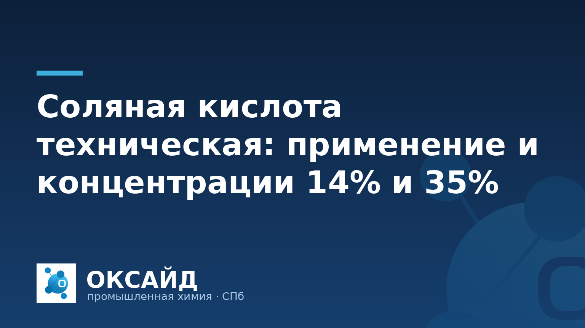

Соляная кислота (хлороводородная кислота, HCl) — одна из базовых неорганических кислот, незаменимая в различных промышленных процессах. Её свойства, такие как высокая реакционная способность и кислотность, делают её востребованной в металлургии, химическом синтезе, водоподготовке и других отраслях. Для промышленных нужд поставляется техническая соляная кислота с различными концентрациями, среди которых наиболее распространены 14% и 35% растворы.
Техническая соляная кислота используется в широком диапазоне производственных задач:
Соляная кислота техническая поставляется в различных концентрациях, что позволяет предприятиям выбрать оптимальный вариант для своих технологических процессов. Наиболее распространены растворы с массовой долей хлороводорода около 14% и 35%.
Выбор между 14% и 35% концентрациями зависит от специфики технологического процесса, требований к безопасности, логистики и экономической целесообразности. ООО «Оксайд» предлагает различные марки технической соляной кислоты, обеспечивая предприятиям доступ к необходимым реагентам. Ознакомиться с полным ассортиментом можно в нашем каталоге продукции «Оксайд».
Соляная кислота — коррозионное вещество, требующее строгого соблюдения правил безопасности при хранении и транспортировке. Её перевозка осуществляется специализированным транспортом, оборудованным для работы с опасными грузами, с соблюдением требований к маркировке и документации. Для транспортировки используются железнодорожные цистерны, автоцистерны, а также полиэтиленовые бочки и кубовые контейнеры (IBC-контейнеры).
Хранение соляной кислоты должно производиться в специально оборудованных складских помещениях, обеспечивающих вентиляцию и защиту от прямого солнечного света. Ёмкости для хранения изготавливаются из материалов, устойчивых к кислотам: полиэтилен высокого давления, полипропилен, стеклопластик, а также сталь с внутренним гуммированным или полимерным покрытием. Необходимо исключить контакт с металлами, не защищёнными от коррозии, и щелочами. Персонал, работающий с соляной кислотой, должен использовать средства индивидуальной защиты: перчатки, защитные очки, респираторы и спецодежду.
Выбор поставщика и марки соляной кислоты требует анализа нескольких факторов. Прежде всего, определите требуемую концентрацию и объём поставки, исходя из производственных потребностей. Убедитесь, что поставщик предоставляет паспорт качества или сертификат анализа на каждую партию продукции, подтверждающий соответствие заявленным характеристикам.
Важным аспектом является логистика. Уточните условия доставки, возможность поставки в нужной таре (бочки, IBC-контейнеры, наливом) и сроки выполнения заказа. ООО «Оксайд» как производитель и поставщик промышленной химии обеспечивает поставки соляной кислоты от 1 тонны по всей территории РФ, предоставляя полный пакет документов и гарантируя качество продукции.
Основное отличие заключается в массовой доле хлороводорода. 35% раствор является более концентрированным, что делает его экономически выгодным для транспортировки (меньший объём на единицу активного вещества) и использования в процессах, требующих высокой концентрации или последующего разбавления. 14% раствор — это уже разбавленная форма, готовая к применению без дополнительных манипуляций, что упрощает дозирование и снижает риски при обращении.
При работе с соляной кислотой необходимо использовать средства индивидуальной защиты: защитные очки или маску, резиновые перчатки, спецодежду из кислотостойких материалов, а также респиратор для защиты органов дыхания от паров. Работы следует проводить в хорошо вентилируемых помещениях. Важно иметь доступ к средствам нейтрализации (например, сода) и источникам воды для промывания в случае попадания кислоты на кожу или слизистые.
Незащищённые металлические ёмкости не подходят для хранения соляной кислоты, так как она вызывает коррозию большинства металлов. Для хранения используются ёмкости из кислотостойких полимерных материалов (полиэтилен, полипропилен, стеклопластик) или металлические резервуары со специальным внутренним защитным покрытием (например, гуммированные или с полимерной футеровкой).
Качество поставляемой соляной кислоты подтверждается паспортом качества или сертификатом анализа. В этом документе указываются основные характеристики продукта, такие как массовая доля хлороводорода, содержание примесей (железо, свободный хлор и др.), а также соответствие нормативным требованиям. По запросу могут быть предоставлены дополнительные протоколы испытаний.
Свяжитесь с ООО «Оксайд» по телефону 8 (812) 320-40-09 — подберём марку и рассчитаем поставку.